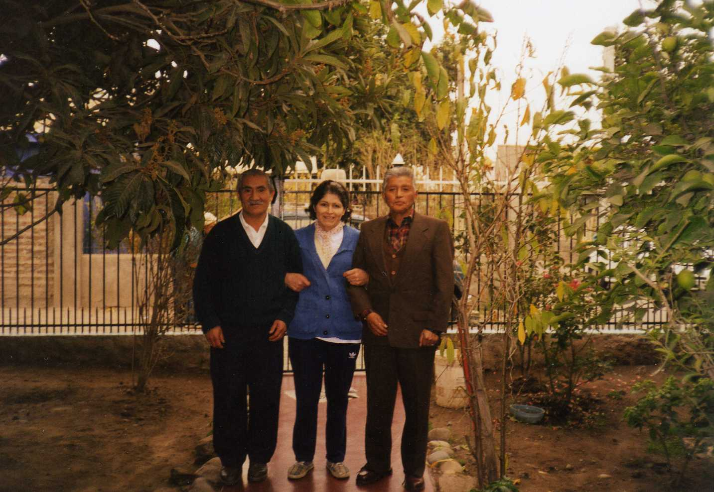
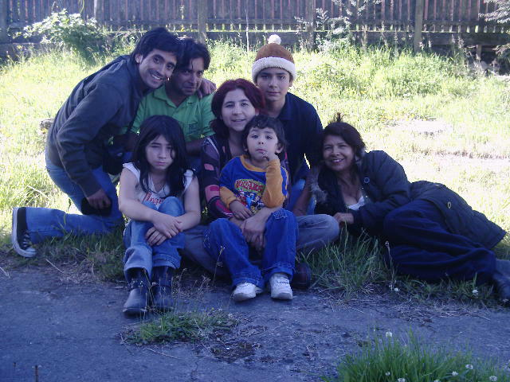

info

Aquí quisiera expresar que, aunque es una página de pruebas, está dedicada a mi familia, a la que ya no existe, pero que persiste en mi mente, en mi corazón y en todo momento. También manifiesto una gran añoranza por épocas pasadas, donde era feliz sin saberlo.

Abajo dejo una foto muy graciosa.